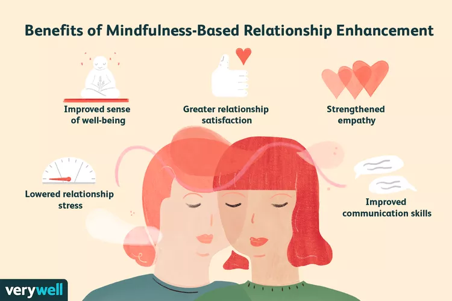

Mindfulness can help us communicate more effectively by allowing us to be fully present and attentive to the needs and perspectives of others.When we practice mindfulness in our relationships, we can cultivate greater empathy, compassion, and understanding. This can lead to more harmonious and fulfilling relationships. Additionally, mindfulness can help us become more aware of our own communication patterns and habits, allowing us to make positive changes and avoid misunderstandings or conflicts.
